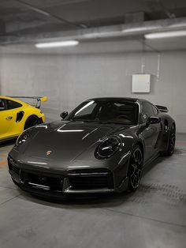
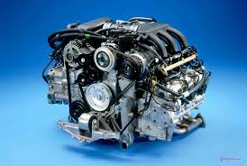
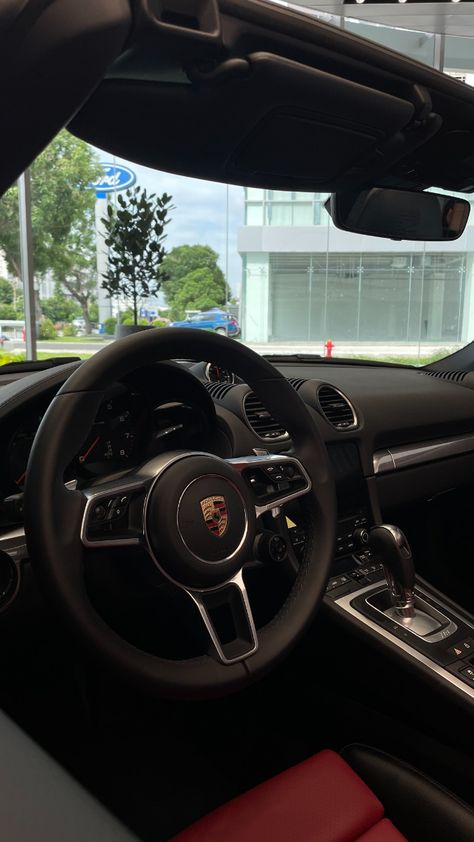

Experience the Power
The Porsche 718 Boxster is a true driver's car that provides a thrilling and engaging driving experience on both winding roads and open highways.
Overview
The Porsche 718 Boxster is a thrilling sports car that delivers an exhilarating driving experience. With its lightweight chassis, powerful turbocharged engines, and precise handling, the 718 Boxster is incredibly agile and responsive. It corners with remarkable flatness and accelerates with a satisfying surge of power. Whether navigating winding roads or cruising on the highway, the 718 Boxster provides a truly engaging and exhilarating driving experience.
Performance
The Porsche 718 Boxster is powered by a range of turbocharged engines, including a 2.0-liter four-cylinder and a more powerful 2.5-liter four-cylinder in the S models. These engines deliver impressive power and torque, providing exhilarating acceleration and a thrilling soundtrack. This combination of powerful engines and a mid-engine layout, where the engine sits behind the driver, ensures optimal weight distribution and contributes significantly to the car's exceptional handling and agility.
Interior Features
The 718 Boxster's interior is a comfortable and inviting space that balances sportiness with a touch of luxury. It's a place where the driver can feel connected to the car and enjoy the driving experience to the fullest.
Specifications
| Feature | Details |
|---|---|
| Engine | 3.8-liter twin-turbocharged |
| Power | 737 horsepower |
| Torque | 221 lb⋅ft |
| 0-60 mph | 4.5 seconds |
| Top Speed | 170 mph |
| Transmission | 7-speed dual-clutch |
| Weight | 2,976 lbs |
| Fuel Economy | 20 mpg city / 25 mpg highway |